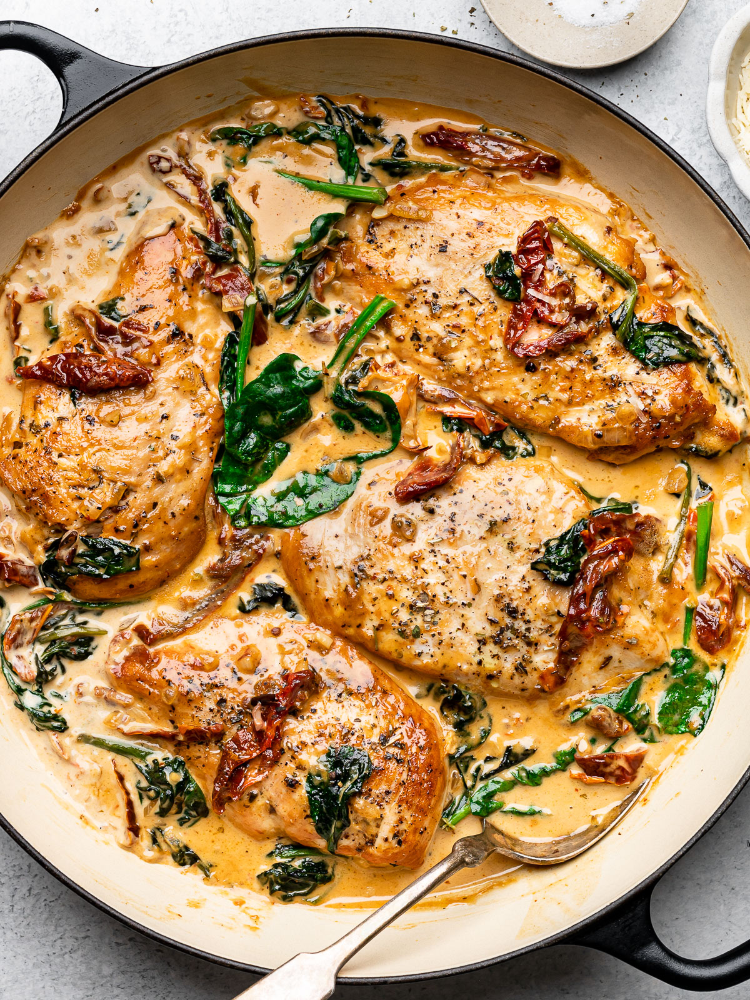

Creamy Tuscan Chicken

Deliciously prepared chicken bursting with Italian seasonings
drenched in a stunning, creamy Parmesan sauce.
Ingredients:
- 4 - skinless, boneless chicken breast
- 4 - Garlic Cloves
- 2 cups - Baby Spinach
- 1 1/2 cups - heavy whipping cream
- 1/2 cup - finely diced Vidalia onion
- 1/2 cup - thin-sliced sun-dried tomatoes
- 1/4 cup - grated Parmesan
- 3 tbsp - Olive oil
- 1 tbsp - Italian seasoning blend
- Salt, to taste
- Pepper, to taste
Steps
- Pat chicken dry and rub with seasoning blend
- Heat olive oil at medium heat and add chicken to pan.
Sear on each side for approximately 3 minutes, or until
golden brown. Remove chicken and set aside on a warmed plate.
- If the pan is dry, add a tablespoon of olive oil to the pan before
adding the onion. Saute until onions are transparent and fragrant.
- Add sun-dried tomatoes and garlic cloves. Saute for 1 minute.
- Add the baby spinach to the pan and heat until fully wilted.
- Stir in the heavy cream and Parmesan.
- Add the chicken back to the pan and cook on medium-low heat for 5
to 8 minutes, or internal temperature reaches 165 degrees.